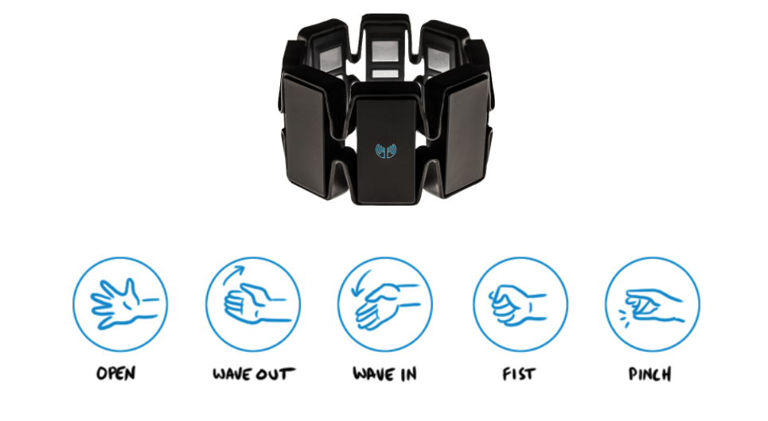

Virtual Reality
The "real-life" implementation
Try it for FreeViewing a virtual tour with your Cardboard is undeniable awesome, but what about building your own?
A while ago, starting from the very simple and confused university project, I developed a mock(but fully functional) platform that enables you to build and visit your own virtual tours.
Technology
Technology wise is a big difference from the previous implementation.
Now I used "FRAMEWORKS" to keep my code organized, so that it's way easier to make changes and to understand what my code does(at least for me)
The virtual tour runs on a custom React Native environment adapted for VR. Well, in this case WebVR. I programmed this version to run on a mouse pointer based raycast system, so not every feature will work with your fancy VR Headset.
The WebServer is now on Python: Django. Working as a web developer I didn't find any other web framework that works that great with my projects. Plus, Python it's a very nice language to manage simple methods.
Virtual Tour
But let's go back to the new stuff: Hi-Fi Rooms has now a virtual tour editor.
The editor works quite simple actually, but it wasn't simple to build it. It took me several weeks to integrate the React environment with the user interface using a Native bridge that relies on event emitters and listeners.
FUNFACT: Just when I started implementing the first interactions React VR changed to React 360 providing a user interface API that actually does that for you. (Thanks, Facebook)
Hi-Fi Rooms users
The idea here is to provide a web platform that enables the hosting of virtual tours for any visitor and the editor for signed in users.
Common solutions nowadays work exactly as the prototypical version of Hi-Fi Rooms: you pay to the platform provider, they come to your house, they take the photos build the tour and that's it.
Hi-Fi Rooms tries to go in the opposite direction: its user is the one who takes the photos and builds the tour, because it's easy and very effective.
This is more affordable for a casual vendor that wants to rent her/his flat for the summer, or for a agency looking for an extra slot in the agenda for today's property tours
The good news is that this time my platform is hosted in the cloud so you can actually try it!
Project Idea
Using virtual reality to gain better distance perception when looking at photos of closed spaces, such as rooms
The team
- Alessandro Mainas
- Federico Maria Cau
- Mattia Samuel Mancosu
The solution
Using equirectangular photos as sphere textures we can render a 3D space which our user can experience as a real environment.
The illusion of perfect immersion given by a Vr headset will do the rest: when processing different images our brain relies on what we saw immediately before, then a distance perception will be far more accurate if the user can see every possible image between the point A and the point B. Exactly as we do in real life!
What did we use?
- Google Cardboard
- A Java webserver
- Javascript(a lot!)
To prove our thesis we built a fake real estate website where our user could experience a virtual tour of some houses or simply look at the very popular photo gallery
Our users were asked to approximately identify distances between objects in a room, like the wall and the sofa, the ceiling and the floor and so on.
The tests were conducted separately using alternatively the photo gallery and the virtual tour.
At the end of the test, our user were prompted to answer a simple SUS post-test regarding the user experience.
Javascript, Three.js, WebGL
Using the Three.js Javascript library we created an interactive 3D space inside the browser window
Indeed to create a 3D scene we need very few lines
var scene = new THREE.Scene();
var camera = new THREE.PerspectiveCamera( 75, window.innerWidth/200, 0.1, 1000 );
var renderer = new THREE.WebGLRenderer();
renderer.setSize( window.innerWidth, 200 );
container = document.getElementById('example');
container.appendChild( renderer.domElement );
Here it's very simple to add some geometry to our scene
var geometry = new THREE.BoxGeometry( 2, 2, 2 );
var material = new THREE.MeshBasicMaterial( {color: 0x00ff00} );
var cube = new THREE.Mesh( geometry, material );
scene.add( cube );
The results
We found out that when the user has to see more than a photo to determine a distance, his measurements are more likely to differ from the original, than the ones taken with the virtual tour visualization.
We can say with a 96.1% probability that there is a substantial difference between the measurements taken with the tour and those taken with the photo gallery.
The measurements taken with the tour are indeed very accurate: for a real distance of 8.5 meters, our user were only 9 to 140 centimeters wrong
The SUS post-test scored an average of 85(A+), which reflects the 100% task completion rate.
What does it mean?
Our solution is listed in the Cagliari University's HCI Hall of Fame
Here you can take a glance of the virtual tour
Here you can find the GitHub project
Game developing with Unreal Engine 4
Game Developer Intern: responsible for the game assets creation pipeline
From the pencil to the videogame...
Content creation is a very difficult task, when drawing a simple sketch with a pencil we set up the guide lines of our actual videogame asset.
I started from a photo, then tried to copy the object I wanted to model on paper, in order to understand better its shape and details.

Once we sketched the asset, we now need to start modeling. For the assets of our videogame we used Autodesk3Ds Max for modeling.

Here we see our stair railing in 3Ds Max, it looks like the original one, but only for the shape.
We need to make it look convincing, so we need to add colors.
This process is called texturing and involves sample images, generally photos, to create the textures, and an high-end image processor to elaborate the images in order to make them ready to be applied to our models.

Now our asset is ready to be imported in the actual game scene.

So now we can elaborate our scene and add as many assets we want.
Evaluation of interaction models in volume visualization
My Erasmus experience in Barcelona, was characterized by the research study made at UPC (Universitat Politècnica de Catalunya). I had the opportunity to conduct a user experience study in 3 different languages Italian, Spanish and English interacting with the professors and students.
Abstract:
The overall objective of this project was to evaluate the use of an immersive virtual reality system such as HTC Vive for the visualization, and the Myo Arm armband for interaction, of volumetric models in medical applications. Based on a ray casting visualizer made in the game engine Unity 3D, the user has to interact with the armband and evaluates the experience. The work focuses on how the interaction metaphors were designed, implemented and evaluated. Once the evaluation is done, they are compared with existing ones to determine whether or not the use of the armband could bring advantages to the interaction experience. The study will be conducted in a laboratory through user tests and post-test questionnaires, then the raw data will be analysed and compared.
Here you can read the whole paper
